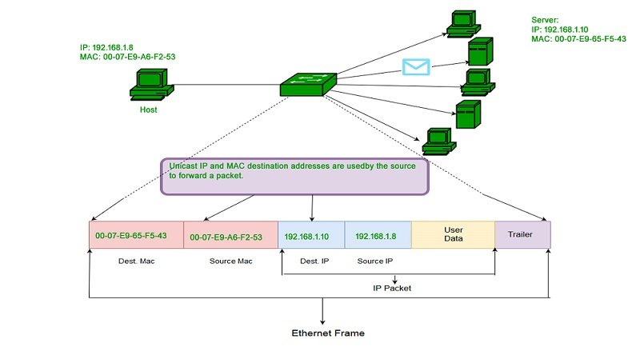

Subscribe Us
Back
Functionalities of NETWORK LAYER
second
LOGICAL ADDRESSING

Network Addresses are always logical, i.e. these are software based addresses which can be changed by appropriate configurations. A network address always points to host / node / server or it can represent a whole network.
Every network device has a physical address called a MAC address, which is assigned to the device at the factory. When you buy a network interface card to install into a computer, the MAC address of that card is fixed and can’t be changed. But what if you want to use some other addressing scheme to refer to the computers and other devices on your network? This is where the concept of logical addressing comes in; a logical address lets you access a network device by using an address that you assign. Logical addresses are created and used by Network layer protocols such as IP or IPX. The Network layer protocol translates logical addresses to MAC addresses. For example, if you use IP as the Network layer protocol, devices on the network are assigned IP addresses such as 207.120.67.30. Because the IP protocol must use a Data Link layer protocol to actually send packets to devices, IP must know how to translate the IP address of a device to the device’s MAC address.
The exact format of logical addresses varies depending on the protocol being used, most protocols divide the logical address into two parts. The network address identifies which network the device resides on, and the device address then identifies the device on that network. For example, in a typical IP address, such as 192.168.1.102, the network address is 192.168.1, and the device address (called a host address in IP) is 102. Similarly, IPX addresses consist of two parts: a network address and a node address. In an IPX address, the node address is the same as the MAC address. As a result, IPX doesn’t have to translate between layer 3 and layer 2 addresses.